Hi, I'm Onkar —
Generative AI Engineer
Computer Science undergraduate building intelligent AI systems, prompt engineering pipelines, and high-performance modern web applications. Translating cutting-edge AI capabilities into reliable, production-ready software.
Onkar Dilip Jadhavar
AI Engineer • Full-Stack Developer • CS Leader
Engineering the future with
AI, innovation, and entrepreneurial thinking.
Bridging research-level AI breakthroughs into scalable, real-world software architectures and high-impact ventures.
I am a Computer Science undergraduate (3rd Year, B.Tech) at Sanjay Ghodawat Institute, focused on building robust Generative AI systems, conversational pipelines, and full-stack web solutions.
My engineering focus centers on bridging machine learning capabilities with production-grade client applications. Whether architecting multi-step prompt pipelines, optimizing context retrieval, or building performant frontend user experiences, I prioritize maintainable code, low latency, and real user impact.
Beyond code, I have demonstrated leadership as Magazine Secretary of the Student Council, Vice-President of CSESA, and represented top technical ecosystems as a Campus Ambassador for Techfest IIT Bombay and GeeksforGeeks.
AI Systems & Prompt Engineering
Building LLM-assisted workflows, context curation, and automation solutions.
Full-Stack Web Engineering
Clean HTML5/CSS3/JavaScript, responsive design patterns, and REST integration.
Technical Leadership & Delivery
Leading editorial teams, organizing technical symposiums, and community outreach.
AI-First Problem Solving
Analyzing system requirements with an AI-native lens—identifying where LLM intelligence and deterministic logic combine for maximum efficiency.
End-to-End Implementation
Owning the complete software cycle from UX prototyping in Figma, client-side UI development, to data pipeline integration and deployment.
Rapid Prototyping & Adaptation
Consistently delivering functioning prototypes under competitive hackathon timelines and rapidly adopting emerging AI frameworks.
Full-Stack Capabilities •
AI-Driven Specializations
A structured breakdown of core engineering foundations, AI integration frameworks, and collaborative toolchains.
Generative AI & LLMs
AI Systems • Prompt Pipelines-
Prompt Engineering Advanced
-
LLM App Integration Proficient
-
OpenAI / Gemini APIs Proficient
-
RAG Architectures Intermediate
Full-Stack & Web
Modern Architecture • UI/UX-
HTML5 & Semantic UI Advanced
-
Modern CSS3 • Grid Advanced
-
JavaScript (ES6+) Proficient
-
RESTful Integration Proficient
Languages & Core CS
Foundations • Problem Solving-
Python 3 Proficient
-
Java (Core & OOP) Proficient
-
C / C++ Intermediate
-
SQL & DBMS Intermediate
Developer Tooling
Productivity • Version Control-
Git & GitHub Proficient
-
Linux / POSIX Shell Intermediate
-
Postman & API Testing Proficient
-
Figma UI Prototyping Intermediate
Leadership & Mgmt
Direction • Public Speaking-
Team Coordination Advanced
-
Public Speaking Advanced
-
Technical Writing Advanced
-
Ambassadorship Advanced
Curriculum Vitae •
Academic & Professional Record
Download verified documentation, review structured career entries, or copy my executive markdown dossier.
Academic Background
Bachelor of Technology (B.Tech)
Computer Science & Engineering • Sanjay Ghodawat InstituteAffiliated to Shivaji University, Kolhapur. Core coursework: Data Structures, Operating Systems, Database Management Systems, Computer Networks, Software Engineering, Object-Oriented Programming.
Higher Secondary Certificate (HSC • 12th)
Maharashtra State Board • Science StreamComprehensive study of Physics, Chemistry, Mathematics, and Computer Science fundamentals.
Secondary School Certificate (SSC • 10th)
Maharashtra State BoardGraduated with top academic standing across mathematics, science, and languages.
Experience & Positions of Responsibility
AI & Web Developer Intern
Kinetrexa • Kolhapur- Developing and testing conversational prompt pipelines and Generative AI workflows for client projects.
- Collaborating on full-stack frontend interface components, state management, and RESTful API integrations.
- Conducting benchmark performance audits on client-side rendering speed and response latency.
Vice-President
Computer Science & Engineering Students Association (CSESA)- Directing executive committee operations, organizing departmental technical symposiums, hackathons, and guest lectures.
- Mentoring 150+ junior engineering students in core CS problem solving and project deployment.
Magazine Secretary • Student Council
Sanjay Ghodawat Institute- Heading the annual institutional magazine editorial board; coordinating cross-department student content, articles, and graphic design.
Campus Ambassador
Techfest • Indian Institute of Technology (IIT) Bombay- Represented Asia's largest science & technology festival, driving 200+ student registrations for national-level competitions.
Student Ambassador
GeeksforGeeks (GFG)- Facilitated DSA problem-solving sessions, campus coding contests, and technical resource distribution.
Chronological Trajectory •
Academic & Professional Growth
A structured ascending progression spanning foundational academic milestones, elected council leadership, ambassadorships, and industry engineering.
Secondary School Certificate (SSC • 10th)
Maharashtra State BoardGraduated with exemplary distinction, securing 95.00% with top academic honors across mathematics and physical sciences.
Higher Secondary Certificate (HSC • 12th)
Maharashtra State Board • Science StreamCompleted advanced pre-engineering curriculum in Physics, Chemistry, Mathematics, and Computer Science fundamentals, achieving 77.33%.
B.Tech in Computer Science & Engineering
Sanjay Ghodawat Institute • Shivaji UniversityAdmitted to the 4-year undergraduate engineering program. Maintained a strong academic record with a cumulative 7.8 CGPA while mastering Data Structures, Algorithms, Operating Systems, and full-stack development.
Magazine Secretary • Student Council
Student Council • Sanjay Ghodawat Institute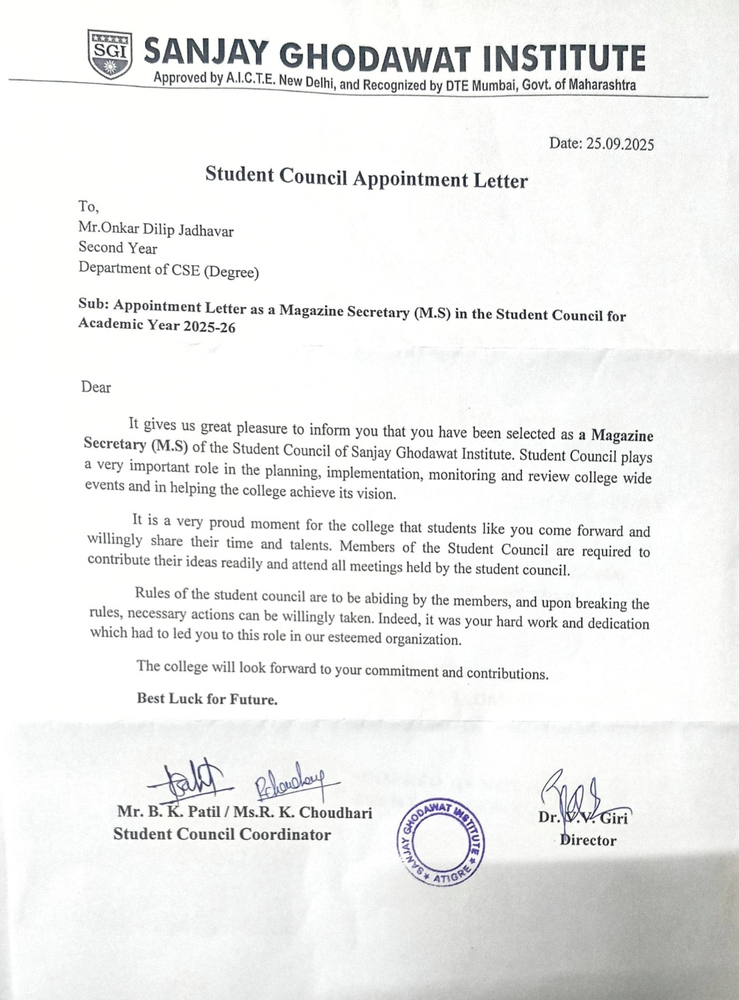
Appointed as Chief Editor of the institutional publication. Led a cross-functional student editorial board managing article curation, technical journalism, and graphic layout.
Vice-President • CSESA
Computer Science & Engineering Students Association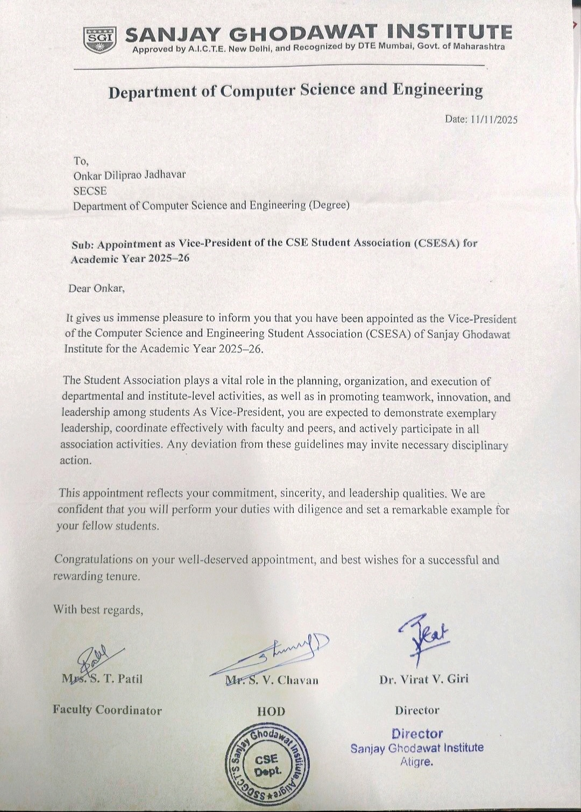
Elected to executive leadership for the department association. Coordinated technical symposiums, hackathons, and structured peer-mentorship tracks for 150+ junior students.
International Student Partner (ISP)
Global Technical Community & OutreachParticipated in cross-border student partner initiatives, connecting collegiate developers to global webinars, open-source discussions, and collaborative software projects.
Campus Ambassador • GeeksforGeeks
GeeksforGeeks (GFG)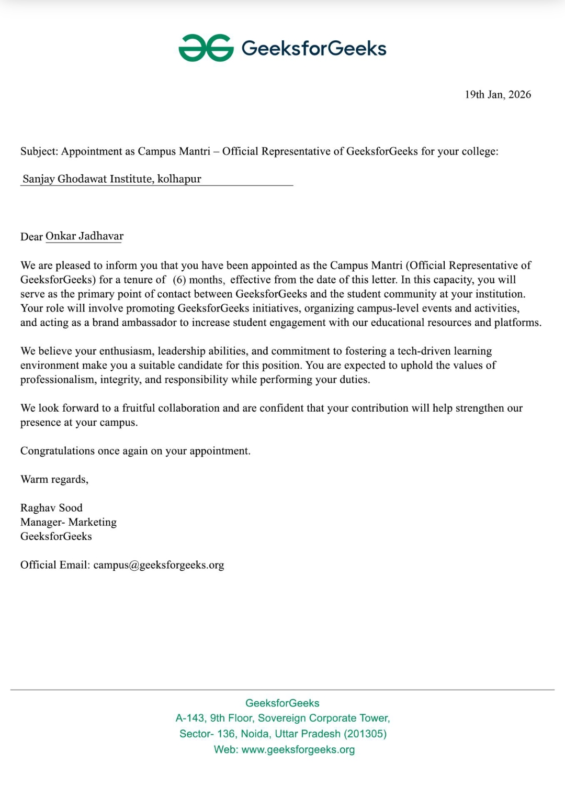
Drove on-campus competitive programming initiatives, sharing curated DSA roadmaps, conducting practice problem drives, and hosting local coding challenges.
Campus Ambassador • Techfest IIT Bombay
Techfest • Indian Institute of Technology (IIT) Bombay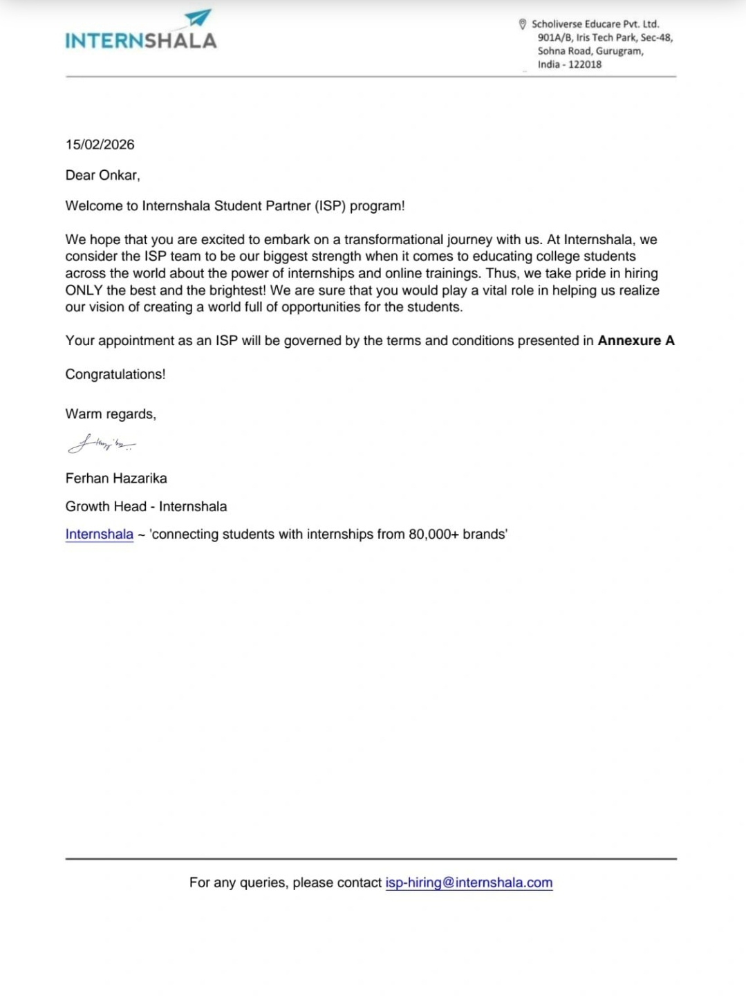
Selected as the official representative for Asia's largest Science & Technology Festival. Spearheaded outreach campaigns driving 200+ student participations in national innovation summits.
AI & Web Developer Intern
Kinetrexa Technologies • Kolhapur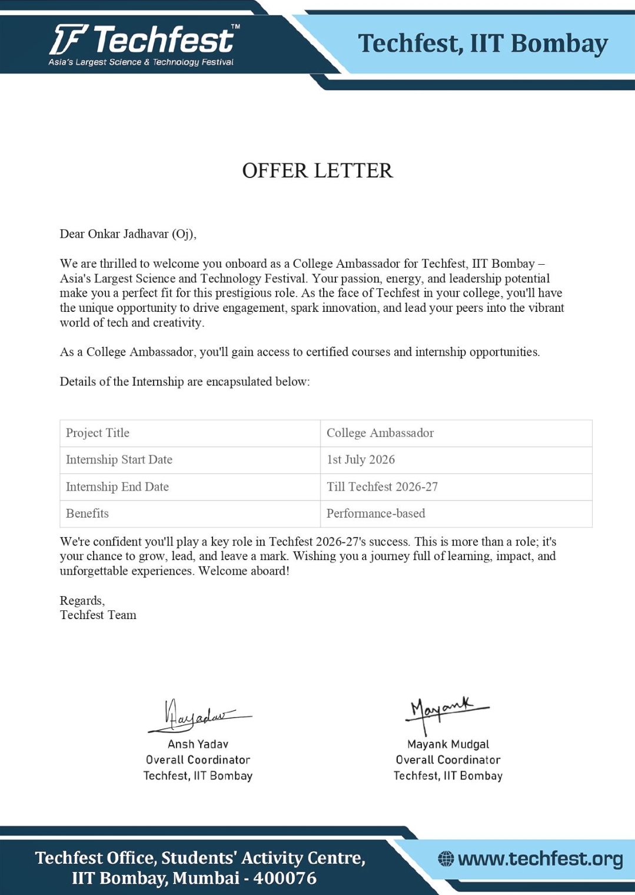
Actively engineering LLM-driven prompt pipelines, context management architectures, and building production-grade user interfaces with responsive JavaScript and clean APIs.
Engineered Solutions •
Featured Technical Projects
Six real-world production projects from my GitHub repository illustrating full-stack web applications, AI summarization, event systems, and developer tooling.
Travel Buddy — Tourism & Itinerary Platform
A comprehensive multi-page travel planning web platform deployed on Vercel. Features dynamic destination exploration, multi-day itinerary planner, hotel reservations, interactive user reviews, and responsive mobile architecture.
- Modular multi-page DOM architecture & responsive UI design
- Client-side state persistence with browser LocalStorage
- Complex form validation & booking reservation logic
Event Hive — Real-Time Booking & Ticketing
An enterprise-grade event management and ticketing platform built with React 18, Vite, and TailwindCSS. Includes live event filtering, interactive seat selection, instant checkout flow, user dashboard, and Chart.js analytics.
- Component-driven architecture with React 18 hooks & router
- Data visualization & interactive metrics with Chart.js
- TailwindCSS design system & dark/light theme switching
AI Webpage Summarizer & Content Extractor
A Python Flask web application that scrapes target webpages using BeautifulSoup4, strips boilerplate text, applies frequency-based NLP sentence scoring, and generates concise executive summaries in real-time.
- Web scraping pipelines with BeautifulSoup4 & HTTP handling
- Algorithmic text summarization & NLP preprocessing
- Asynchronous Flask request routing & error boundary handling
Cyber-X: Humanity 2.0 — Techfest Showcase
A futuristic web interface built for Techfest IIT Bombay campaign initiatives. Features sci-fi HUD aesthetics, glowing glassmorphic panels, keyframe animations, and custom Google Fonts typography.
- Advanced CSS3 animations, pseudo-elements & neon shaders
- Thematic visual identity & high-impact branding for IIT Bombay
- Cross-browser responsive testing & layout scaling
Full-Stack SaaS Platform & RESTful Backend
A scalable web application featuring an Express backend with Prisma ORM database modeling, REST API endpoints, JWT authentication, and a Progressive Web App (PWA) client with Service Workers for offline caching.
- Backend REST API architecture & middleware in Express
- Database schema modeling and queries with Prisma ORM
- Progressive Web App (PWA) service worker lifecycle
Executive AI Portfolio & Interactive Dossier
A bespoke engineering portfolio featuring 240px architectural grid checks, multi-stop titanium chrome typography, 5-pillar horizontal skills matrix, lightbox credential inspections, and ATS-optimized resume exports.
- Advanced CSS design tokens, dark glassmorphism & responsive grid
- Dynamic typewriter engines, scroll observers & modal lightboxes
- Clean semantic HTML5 structure & SEO metadata optimization
Achievements I'm Proud Of •
Verified Institutional Milestones
Four cornerstone leadership appointments and distinctions across regional and national technical ecosystems. Click any letter to inspect verified documentation.
Magazine Secretary • Student Council
Student Council • Sanjay Ghodawat Institute
Headed the annual institutional magazine editorial committee; supervised cross-department student content curation, authored technical editorials, and coordinated final print distribution.
Vice-President Council • CSESA
Computer Science & Engineering Students Association
Elected to executive leadership of CSESA; directed technical symposiums, departmental hackathons, guest lectures, and structured coding workshops for 150+ junior students.
GFG Campus Ambassador
GeeksforGeeks (GFG)
Organized campus problem-solving drives, shared curated Data Structures & Algorithms learning materials, and facilitated regional coding contests.
Techfest IIT Bombay Ambassador
Techfest • Indian Institute of Technology (IIT) Bombay
Selected to represent Asia's largest Science & Technology Festival, leading campus engagement and connecting 200+ engineering students to national innovation summits.
Verified Certifications •
Technical Accreditations
Nine verified credentials covering Generative AI, Full-Stack Web Development, Data Structures, Python, and Engineering Leadership. Click any certificate to inspect full document.
Generative AI & Prompt Engineering
Verified Credential #1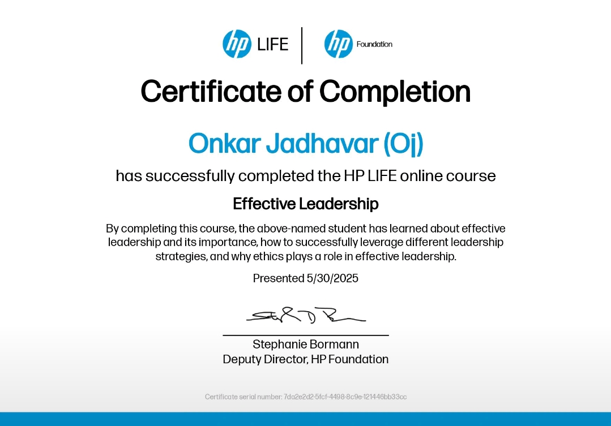
Full-Stack Web Development
Verified Credential #2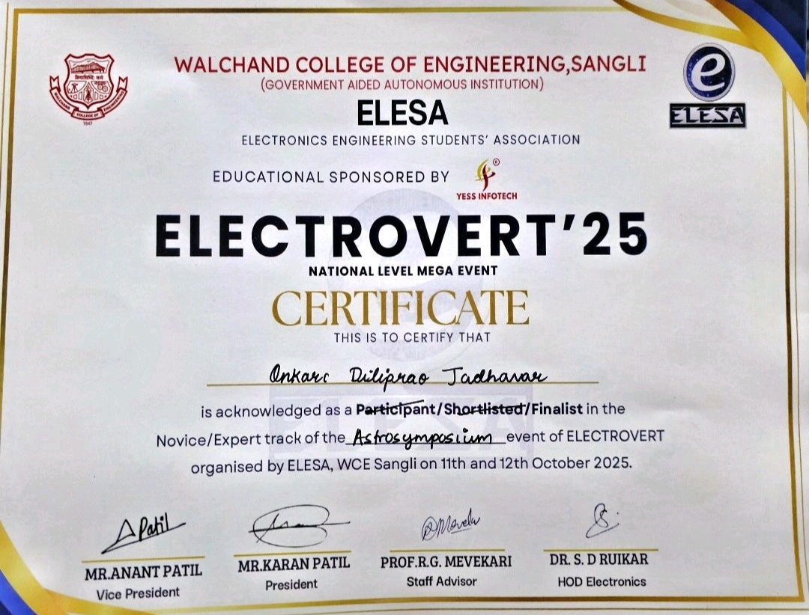
Python Programming & Logic
Verified Credential #3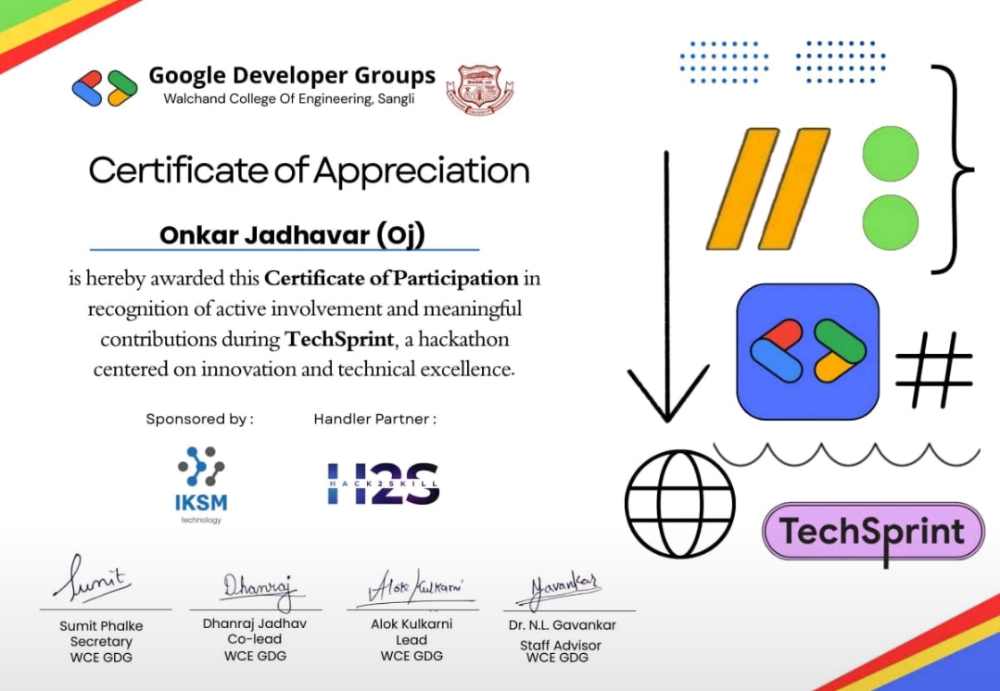
Data Structures & Algorithms
Verified Credential #4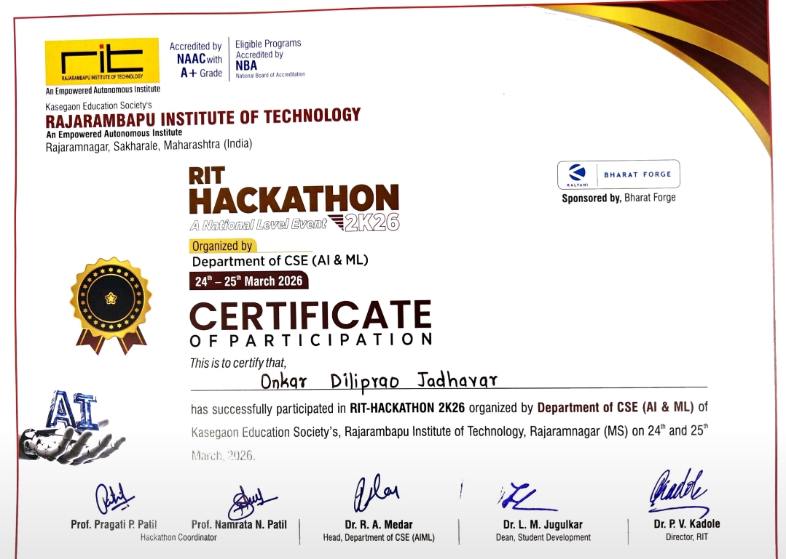
Java OOP & Application Design
Verified Credential #5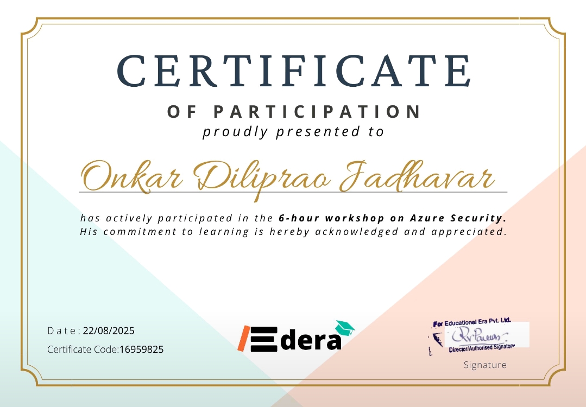
SQL & Database Architecture
Verified Credential #6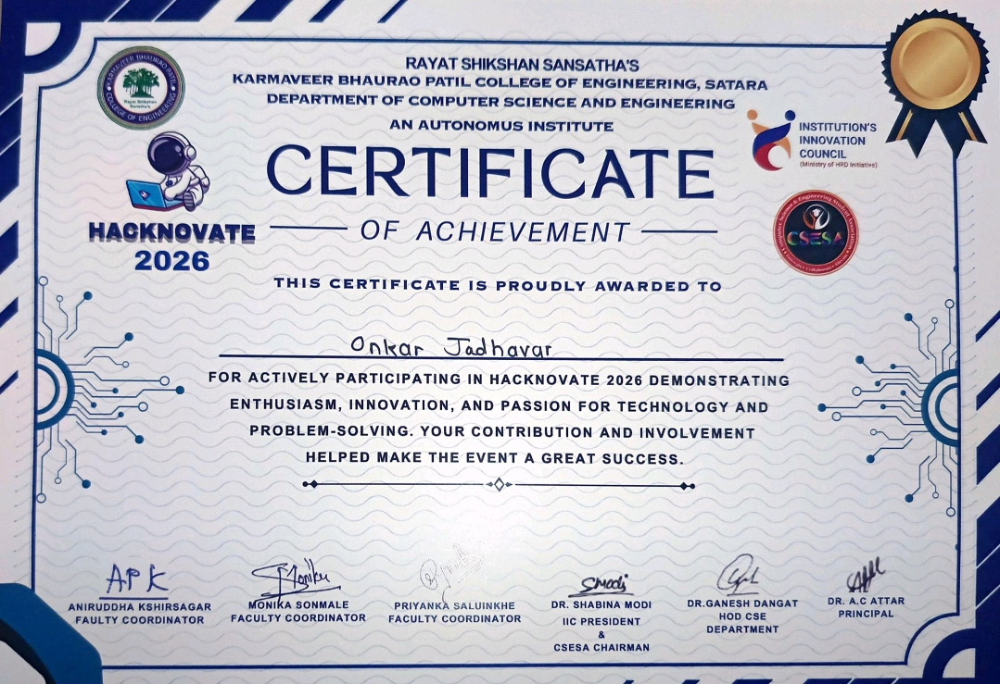
Techfest Ambassador Distinction
Verified Credential #7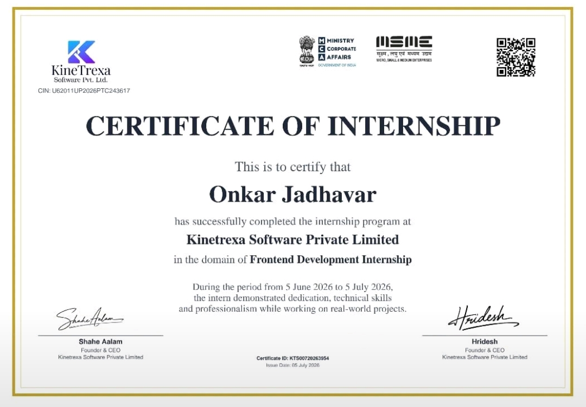
Student Ambassador Recognition
Verified Credential #8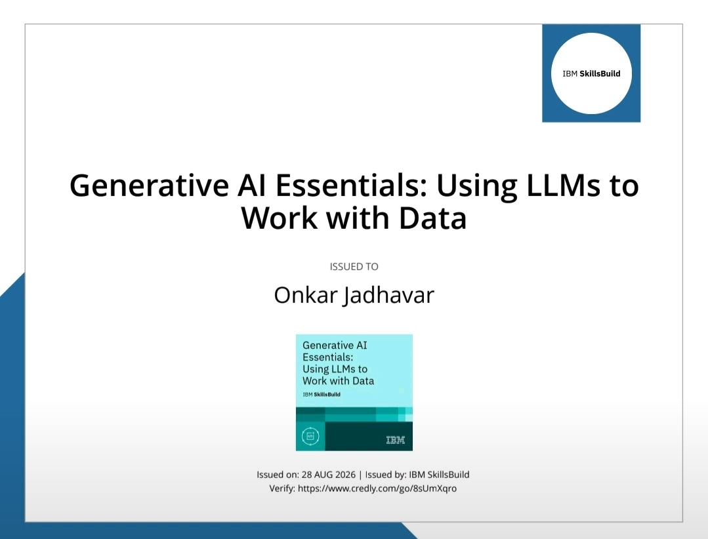
Leadership & Editorial Excellence
Verified Credential #9Let's Build Something
Exceptional Together
I am actively seeking Generative AI Engineering, Full-Stack Development, and Software Engineering roles. Reach out for project inquiries, technical collaborations, or employment opportunities.